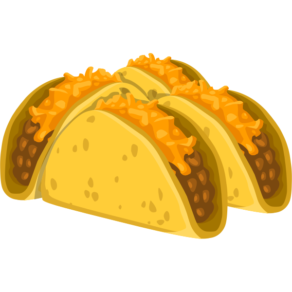

Bean & Cheese Tacos
Back to Home
Bean & Cheese Tacos Recipe

This is a bean and cheese taco. One of the best inventions made my humans. You can pair it with anything you can imagine. Here's a tip from me: Mix the bean and cheese with some cooked potatos and bacon and now you have the ultimate bean and cheese taco. Trust.
Ingredients
- HEB Tortillas
- Red Kidney Beans
- Pork Skin
- Water
- Salt
- Shredded Cheese
- (Optional) Diced Potatos
- (Optional) Bacon
Steps
- Add kidney beans, pork skin, water, and salt to a slow cooking pot
- Let them cook for 6 hours
- Mash the beans and pork skin until fully mashed
- Heat up tortillas on a pan
- Combine torillas with beans and shredded cheese
- Done